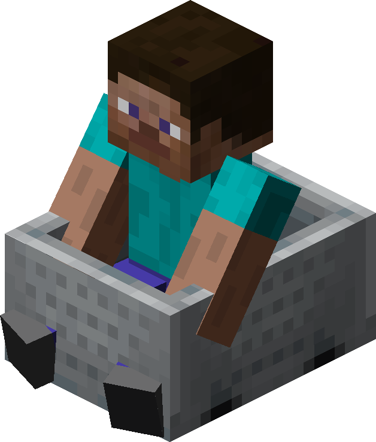
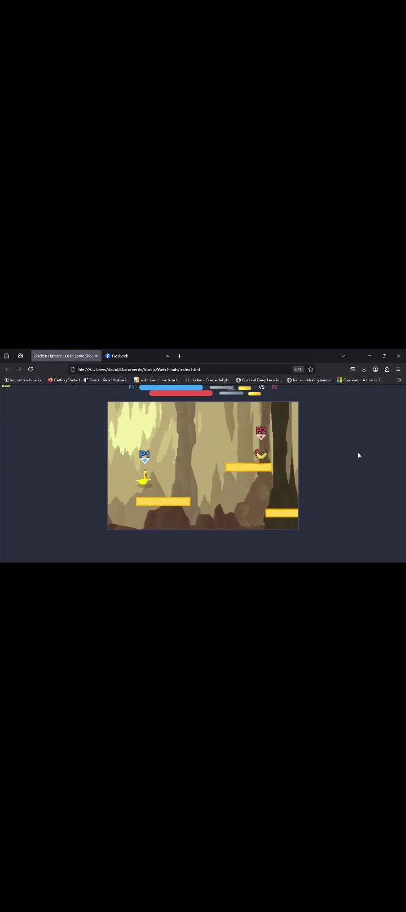

About Me
I am a medium-sized individual by Asian standards, and a chill person who doesn't sweat the small stuff unless it's a gaming match. I speak Ilonggo, often mixing in a bit of English, kunwari conyo, and sometimes I jabber random nonsense.
I'm a Valorant-loving, MLBB-obsessing, Manhwa-gobbling, food-coma-inducing machine. When I'm not gaming, I'm probably stuffing my face with something delicious (become priorities).
Personal Details
| Birthdate: | March 3, 2003 |
|---|---|
| Address: | Purok Malinong Barangay 40 |
| Parents: | Pamela Gonzales |
| Hobbies: | Manga, Movies, Games, Walking, Complaining, and Procrastinating |
| Talents and Skills: | Submitting activities before the deadline, kaya mag backflip pero half lang. |
Work Project
As a Fourth-year BS Information Technology student at STI West Negros University, I created a simple to-do list web app for a class project. I used HTML, CSS, and basic JavaScript to build it. The app lets users add, edit, and delete tasks, with a clean interface that works on both phone and laptop screens. It was my first time using local storage to save tasks, and I’m pretty proud of how it turned out!

I also worked with classmates on a group project to design a basic student information system for our school. My role was to create the login page and student dashboard using HTML and CSS, with some JavaScript for form validation. It’s not super fancy, but it taught me a lot about teamwork and debugging code. Our professor liked the layout, which was a big win for us!

I’m currently working on a personal project to build a small portfolio website (like this one!) to showcase what I’ve learned. It’s a work in progress, but I’m experimenting with CSS animations and trying to make it look cool. I’m excited to keep learning and take on bigger projects in the future!
My Services
As an IT student, I’m still learning, but I’m eager to help with small projects and tasks while I grow my skills. Here’s what I can offer:
- Simple Graphic Edits: I use Canva to make posters, flyers, or social media graphics for school events or small projects. I’m not a pro yet, but I can make things look neat and fun!
- Tech Help for Beginners: I can assist with basic computer tasks, like setting up Google Docs, organizing files, or explaining how to use school software. I’m patient and love helping classmates or friends figure things out.
- Basic Web Design: I can create simple, good-looking games "its called got my cock" using HTML, CSS, and a bit of JavaScript. Perfect for personal portfolios or small club websites, like for school organizations.


I’m open to helping with school projects or small tasks for free or for practice. Just reach out, and I’ll do my best to assist while learning along the way!